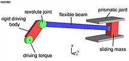
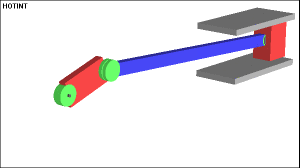

THE SLIDER CRANK MECHANISM
Mechanisms are used in variety of fixed motion generation applications in Engineering, where as Robots are used in applications where programmable motion is required. This Laboratory provides a basic exposure to design and control of such motion control applications in various applications. Ranging from 2D planar mechanisms to that of spatial mechanism design a set of experiments are offered concerning position, velocity and acceleration synthesis and analysis for basic motions. In addition some basic mechatronic control methods using a common Lab PC and USB interface to control motion generating devices like stepper motor and servo motor are offered. These are further augmented with real robot control as applied in fixed base manipulators to that of moving base robots.
To show how a fixed repetitive motion path in a 1-D space that can be generated by a simple closed chain mechanism using a single input. The motion of a point in any of the links in the mechanism can be mapped to that of the input given. User learns the various aspects of motions generated in such mechanisms through a series of visual simulations that can be carried out by varying its basic parameters.
The Slider-crank mechanism is used to transform rotational motion into translational motion by means of a rotating driving beam, a connection rod and a sliding body. In the present example, a flexible body is used for the connection rod. The sliding mass is not allowed to rotate and three revolute joints are used to connect the bodies. While each body has six degrees of freedom in space, the kinematical conditions lead to one degree of freedom for the whole system.

A slider crank mechanism converts circular motion of the crank into linear motion of the slider. In order for the crank to rotate fully the condition L> R+E must be satisfied where R is the crank length,L is the length of the link connecting crank and slider and E is the offset of slider. A slider crank is a RRRP type of mechanism i.e. It has three revolute joints and 1 prismatic joint. The total distance covered by the slider between its two extreme positions is called the path length. Kinematic inversion of slider crank mechanisms produce ordinary a whitework quick return mechanism.
The motion of the mechanism can be viewed in the following gif animation:

- Insert the crank,slider & offset length in the three text boxes.make sure that slider length is larger than the sum of crank length & offset.
- Click the simulation button to run the simulation.
- The left top figure in the output shows the graphical simulation of the slider crank mechanism.
- The other three panes show the variation of both the angles with respect to time and the variation of theta2 vs theta1 respectively.
Below is a picture of the GUI as it would appear on the users screen :
{kind=link}
Here is the link to the pdf file:
Here is the link to the MATLAB file :